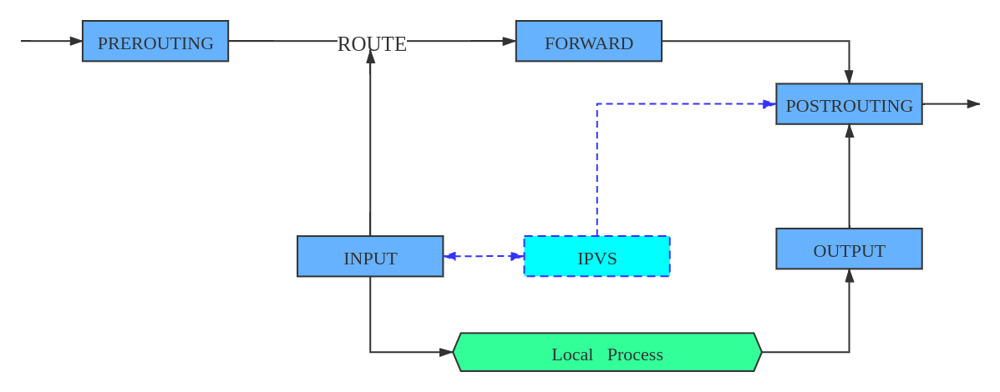
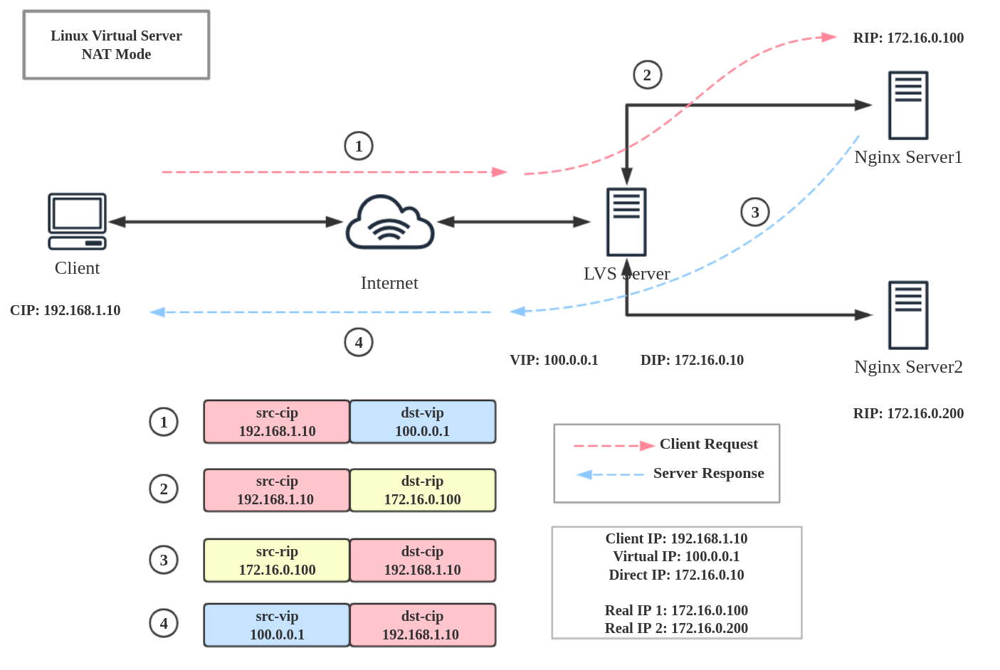
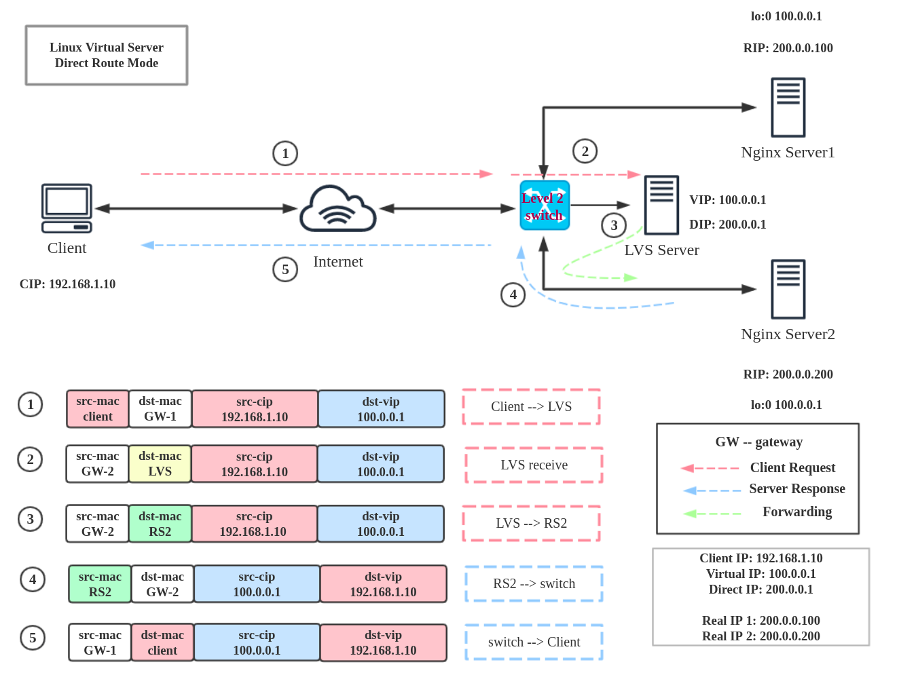
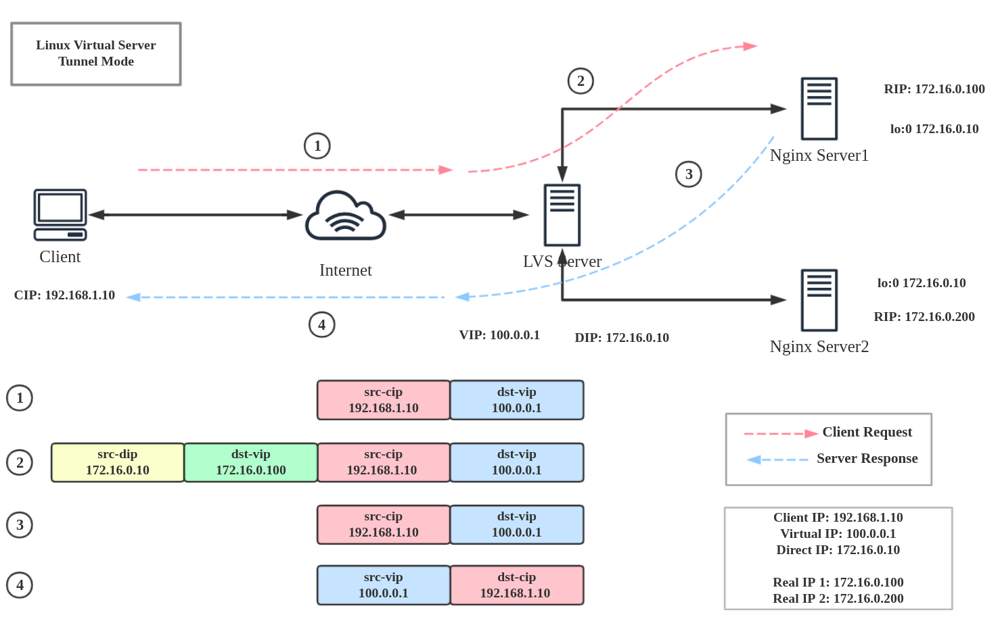
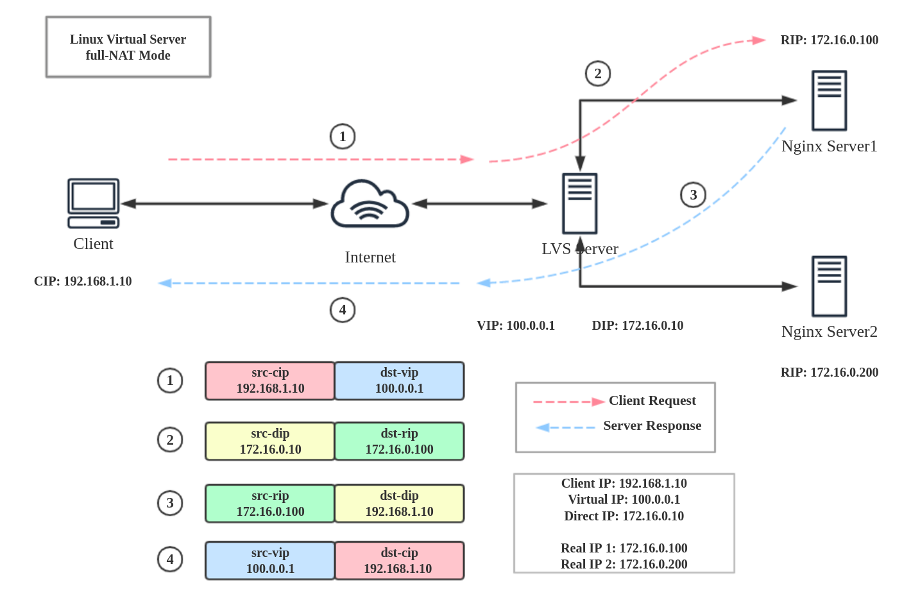

引言:
集群让同一业务部署到不同的服务器中, 负载均衡让不同服务器有序相应请求, lvs则是实现负载均衡的一个手段
正文内容
分布式集群和负载均衡
厨房的故事
小镇上开了一家老吴川菜馆，店铺刚开业之聘请了一名厨师A。该厨师从备菜、洗菜、炒菜样样熟悉。大半年过去了生意红红火火，老板为了提高上菜的速度，决定再聘请一名厨师B。厨师B是新手，在厨师A的教导下，很快就开始了备菜、洗菜、炒菜的活儿。又打半年过去了，菜馆开始扩展，为了使厨师们专心炒菜，老板升级了厨师A和B为主厨，负责炒菜。招来了配菜师C为副厨师，负责备菜和洗菜。现在,三位厨师分工合作，收到套餐AA订单后，配菜师C备好材料，递给厨师A，在厨师A炒菜期间，前台又掉下套餐BB订单，配菜师C将相应的材料交给了厨师B…
厨师A和厨师B能实现相同的职能, 二者互为备份, 二者同时工作便成为了集群- 集群(Cluster): 对于相同的业务, 在不同的个体上的实现, 其实现个体的集合便成为了群组
陪菜师C实现备菜和洗菜职能, 后续炒菜职能被厨师A或B完成, C和(AB)的关系就是分布式- 分布式(Distributed): 将一个业务, 拆分为多个子业务, 不同个体执行不同子业务, 当子业务被逐一完成后, 业务也一应完成
陪菜师C接到订单，依照厨师的繁忙程度(一定的规则)，递送材料的便是负载均衡- 负载均衡(Load Balancing): 将工作量进行平衡, 分摊到不同的个体上执行的方式
- 负载均衡的实现
- 硬件
- F5 –> Load Balancer / BIG-IP
- Kemp –> LM-X{3,15,25,40}
- citrix –> netscaler
- 软件
- lvs –> Linux Virtual Server
- Nginx –> upstream backend
- httpd –> mod_proxy
- 硬件
lvs基本知识
基本概念
- lvs 是章文嵩发起的一个开源项目
- 因其只进行服务的分配工作, 不处理真正的请求, 因此被称为虚拟服务器(virtual server)
- 对应虚拟服务器, 后台真实响应用户请求的服务器被称作真实主机(Real Server)
- lvs同时是反向代理服务器的一种
- 反向代理是特指
服务器的代理 - (正向)代理是指
客户端的代理
- 反向代理是特指
- 由于lvs能实现将不同端口的服务转发至对应主机进行响应
- 因此不少人称其为
l4路由器/交换机 - lvs 术语
- 调度器: Director, Balancer –> 用于接受用户请求
- 真实主机: Real Server (RS) –> 真正处理用户请求的主机
- 相关IP
1
2
3
4
5
6
7
8
9
10
11
12+------+ +----------+ +-------------+
|client| -- -- |lvs server| -- -- | real server |
+------+ +----------+ +-------------+
| | | \ Real Server IP (RIP)
| | \ Director IP (DIP)
| \ Virtual IP (VIP)
\ client IP (CIP)
# CIP: 客户端IP
# VIP: 调度器与客户端通信的IP
# DIP: 调度器与Real Server通信的IP
# RIP: 后端主机和用于调度通信的IP
运行原理
- LVS的组成结构
- ipsadm (用户空间)
- LVS的管理工具, 管理员通过它设置规则, 实现负载均衡
- 一般情况下, 默认没有安装
- ipvs (内核空间)
- LVS根据制定好的规则进行工作
- ipsadm (用户空间)

- 解释
- 当客户访问服务时, 数据包到达
PREROUTING链, 通过raw,mangle,nat三个表的匹配后 - 进入
INPUT链, 此时当IPVS发现访问的报文地址和端口符合LVS集群规则匹配时 ipvs将根据定义好的规则和算法, 将保温发往POSTROUTING链中, 报文送出到达Real Server
- 当客户访问服务时, 数据包到达
lvs工作模式
- lvs有三种通用工作模式
- NAT (地址转换)
- Direct-Route (DR)
- Tunnel (ip)
NAT
lvs-nat (MASQUERADE)
- 特点
- 请求报文与响应报文都经由director
- RIP和DIP必须在同一网段
- 多目标的DNAT (iptables)
- 通过修改请求报文的目标IP地址(同时可能会修改目标端口)
- 至挑选出某RS的RIP地址实现转发
- RS和DIP应该使用私有地址, 且RS的网管要指向DIP
- 请求和响应报文都要经由director转发, 极高的负载场景中, director将成为性能瓶颈
- 支持端口映射
- RS可以使用任意操作系统
- RS的RIP和Director的DIP必须在同一IP网络
- 特点
图解

DR (默认)
lvs-dr (direct routing) (GATEWAY)
- 特点
- 请求报文经由direcotr, 响应报文由RS直接响应Client
- Direcotr 与 RS 必须要在同一物理网络中
- 必须保证前端路由器将目标IP为VIP的请求报文发送给director
- 静态绑定
- arptables
- 修改RS主机内核的参数
- RS的RIP可以使用私有地址, 但也可以使用公网地址
- RS跟director必须在同一物理网络中
- 请求报文经由direcotr调度, 响应报文一定不能经由direcotr
- 不支持端口映射
- RS可以是大多数的OS
- RS的网关不能指向DIP
- 特点
图解

Tunnel
- lvs-tun (ip tunneling) (IPIP)
- 特点
- 不修改请求报文的IP首部, 通过在原有的IP首部(cip<–>vip)之外, 再封装一个IP首部(dip<–>rip)
- 必须保证RIP,DIP, VIP全为公网地址
- RS的网关不能指向DIP
- 请求报文必须经由direcotr调度, 响应报文不能经由director
- 不支持端口映射
- RS的OS必须支持隧道功能
- 特点
- 图解

Full-NAT
- lvs-fullnat
- 特点
- director通过同时修改请求报文的目标地址和源地址
- 不是内核默认机制
- VIP是公网地址, RIP,DIP是私网地址, 二者无需在同一网络中
- RS接收到的请求报文的源地址为DIP, 因此要响应给DIP
- 请求报文和响应报文都必须经由Director
- 支持端口映射机制
- RS可以使用任意OS
- 特点
- 图解

lvs调度算法
静态方法 (起点公平)
- 特点
- 仅根据算法本身进行调度
- 类型
- RR: round robin 轮询
- WRR: weighted round robin 加权轮询
- SH: soure (IP) hash 实现session保持的机制
- 同一个IP的请求将始终调度到同一个RS
- DH: destination hash
- 将同一个目标的请求始终发往同一个RS
- 使用率较低
动态方法 (结果公平)
- 特点
- 根据算法及各RS的当前负载状态进行调度
- 负载: overhead较小的主机将是被挑选的主机
- 根据算法及各RS的当前负载状态进行调度
- 类型
- LC: least connection
- overhead = Active * 256 + Inactive
- 值较少则为挑选主机
- WLC: weighted lease connection
- overhead = (Active * 256 + Inactive) / weight
- 值较少则为挑选主机
- SED: shortest expection delay
- overhead = (Active + 1) * 256 / weight
- 值较少则为挑选主机
- NQ: Never Queue
- 当用户请求较少时, 各主机分一个
- 后续按权重分配 (首次RR + SED)
- LBLC: Locality-Based lease connection
- 动态的DH算法
- 正向代理情形下的server
- LBLCR: Locality-Based lease connection with repliction
- 带复制的LBLC算法
- LC: least connection